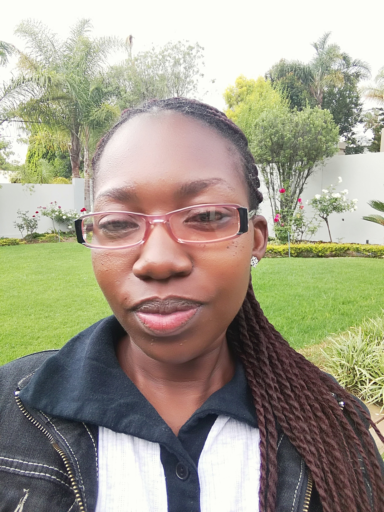

442 Kekana Street
Mapetla
Soweto
1818
Phone:0744647543
Email: m.makhongoana@gmail.com

|
Personal details |
Date Of Birth: 1st January 1990 marital Status: Single Drivers License: Code 10/Code C1 Home Language: South Sotho Other Language: english,Afrikaans,Zulu |
|
Work Experience |
Mobile Development: The InnovationHub currently 2018 Assistant Trainer for African Code Week: Sci-bono ICT 17-21 Oct 2016 and 23-27 Oct 2017 Stocktaking: Dial a student - 2014 to 2015 Exam Assistant: Department of Education Florida - August 2014 Lab Coodinater: Gauteng City Region & gauteng on line - June 2011 to 29 March 2013 |
|
Education |
Sci-bono ICT Academy: CCNA security 2018 Wits (Tshimologong) Braamfontaion: Software Testing - 2017 to 2018 Sci-Bono ICT Academy : CCNA Routing and Switching - 2015 to 2016 central Johannesburg Collage: CCNA National - 2015 to 2016 Xtensive ICT Academy Midrand : NQF level 4 Information technology - 2011 to 2012 |
|
High School |
South West Gauteng Collage - Doopsenville: 2008-2010 Seta-School Based Course: Roodepark 2007 |
|
Intrests & Activities |
Methodist Church Yoth Unit Steward at Socity level (managment Team), Musice,Readingd, board Games, Meeing new people and love Animals. |
|
References |
Mr mandla Nkuna (Project Manager for African Code Week: CCNA National - 2015 to 2016 Mr Mandla Nkuna (Project Manager for African Code Week Sci-Bono ICT Acadamy 079 758 8808 or 011 639 8400 Mr Tshepiso Nkoale (facilitator) Sci-Bono ICT Acady 078 590 6175 or 011 639 8400 Dial a student 011 403 2369 |
|
Community Activities |
Stage Member of the the Methodist Church of southren Africa and part of the youth Movement(Wesely Guild), A Yoth Leader (Steward) for Moroka Socity and Community projects. |